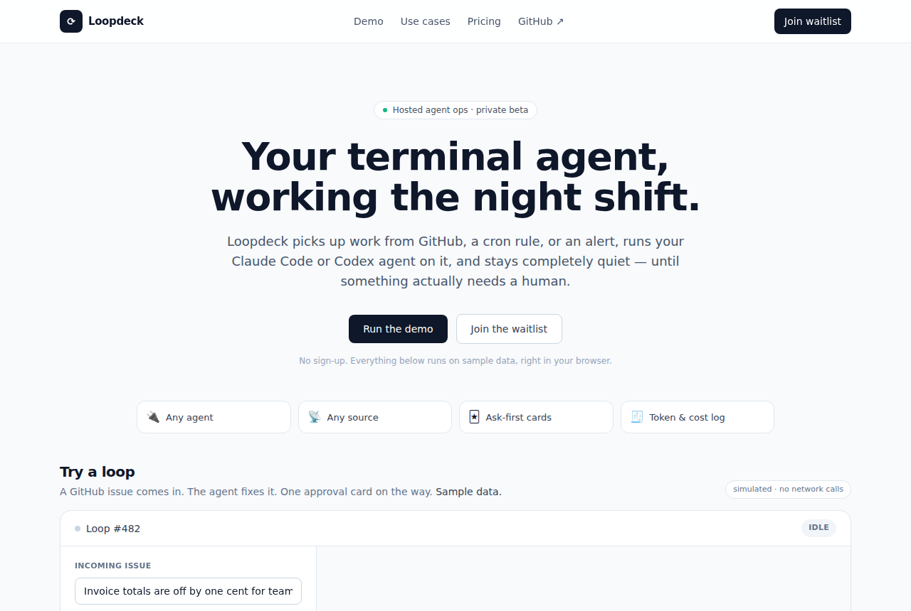

Agent Autoloop: Background CLI Agents That Ask Before Risky Moves
KKKKhazix/agent-autoloop · AI infraMIT⭐ 2,353

Agent Autoloop is a lightweight, self-hosted automation hub for command-line coding agents like Claude Code and Codex. It lets an agent run in the background, handle events (cron jobs, GitHub issues, alerts), and only interrupt you when it needs a decision — via Slack, Discord, or desktop notifications. The core has zero external dependencies, runs on a single Mac or Linux machine, and uses pluggable sources, agents, and notification channels. Per the README, you can set up rules in a JSON file, and the agent communicates results in its final reply. The project is MIT-licensed and already has 2.3k stars, though its growth rate is unusually high for being only a day old. The product opportunity is a hosted version: a web UI to configure rules, Slack integration, managed execution, and cost/approval tracking. This could appeal to indie hackers and small teams who want reliable, always-on agent workflows without managing infrastructure. The main risks are unverified maturity (Windows support pending, examples not fully tested in real services) and the need to adapt China-centric examples (Feishu, DingTalk) to US/global channels like Slack and Discord. With a clear pain point and permissive license, it's a solid base for a lightweight hosted service, but validation and localization are essential before investing heavily.
Today's top 5
| # | Repo | Buzz | Startup | Overall |
|---|---|---|---|---|
| 1 | KKKKhazix/agent-autoloop | 7.0 | 7.15 | 7.45 |
| 2 | brightsongwrath/personal-data-deletor-osint | 8.0 | 6.95 | 7.25 |
| 3 | mromidev/claude-animated-shorts | 7.67 | 7.15 | 7.21 |
| 4 | harry0703/MoneyPrinterTurbo | 8.0 | 6.15 | 7.11 |
| 5 | storytold/wordcraft | 8.33 | 5.85 | 7.09 |